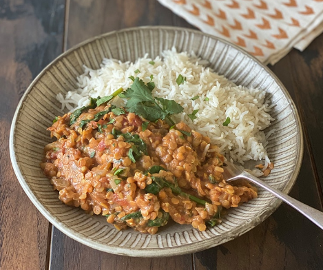

Creamy Lentil Dhal Recipe

Description
Lentils are one of our favourite ingredients. High in fibre and protein, low in fat and, most importantly,
tasty! Dhal is a classic dish that makes the most of these versatile pulses, and can easily be made gluten free
and vegan too.
Ingredients
- low-calorie cooking spray
- 1 large onion, peeled and finely chopped
- 3 garlic cloves, peeled and crushed
- 1 thumb-sized piece of root ginger, peeled and grated
- 2 tsp garam masala
- 1 tsp ground coriander
- 1/2 tsp ground cinnamon
- 400g tin of chopped tomatoes
- 400ml coconut milk
- 150ml vegetable stock (2 stock cubes)
- 1 carrot, peeled and grated
- 250g red lentils
- juice of 1 lemon
- 50g washed baby spinach
- a handful of chopped fresh coriander
Steps
- Spray a saucepan with low-calorie cooking spray and place over medium heat
- Sauté the onions for five minutes, until softened
- Add the garlic, ginger and the spices and cook for one minute, until fragrant
- Pour in the tomatoes, coconut milk and stock and stir well
- Stir in the grated carrot and the red lentils
- Bring everything to the boil, stir and cover, then turn down the heat and leave to simmer for 20 minutes,
stirring occassionally
- Add the lemon juice and then stir in the spinach and coriander, and continue stirring over the heat until
the spinach has wilted
- Serve with a portion of rice, or naan bread, or just enjoy on its own